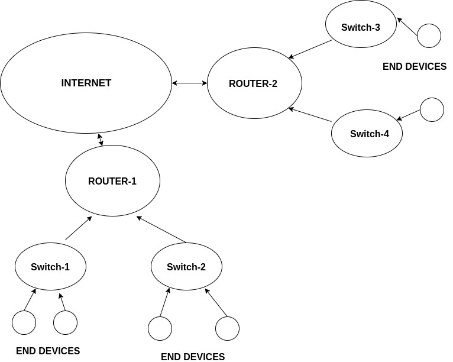

The overview of Networking!
Hello guys! I m back with my second post. Sorry for the late post as for the past few days I was suffering from some health issues. I hope you enjoy this post. :) Also special thanks to Sahil Tembhare for helping out with this post!
First thing we need to understand while learning basic networking is routing, switching, how the packet move from place to another on the internet and what are the protocols governing them. So a router is something which connects various networks while a switch is something which lets you communicate to devices ON the network. Let me explain this with an example:

Also the thing here to notice is that the network which allows end devices to connect to each other is called the Internal Network. Now the Internet or External network can be said as anything which is accessible by the public in general!
Let’s get acquainted with some of the popular networking terms!
- Subnet mask: A Subnet mask is a 32-bit number that masks an IP address, and divides the IP address into network address and host address. Example In decimal notation:
- IP address 192.168.1.10
- Subnet mask 255.255.255.0 Network address is 192.168.1 and host address is 10.
- Vlan: A virtual LAN is used to divide a single network into private networks to imbibe privacy in the network. The difference between vlan and subnet mask is that vlan divides a network where as subnet is used to identify the network.
- Unicast: Unicast routing is the process of forwarding unicasted traffic from a source to a destination on an internetwork. Unicasted traffic is destined for a unique address.
- Multicast: Multicast IP Routing protocols are used to distribute data (for example, audio/video streaming broadcasts) to multiple recipients. Using multicast, a source can send a single copy of data to a single multicast address, which is then distributed to an entire group of recipients.
- Broadcast: Delivering a packet sent from a source node to all other nodes in the network.
- Private IP addresses: A private IP address is an IP address that's reserved for internal use behind a router or other devices which use Network address translation. The following are the private IP address range
- 10.0.0.0 to 10.255.255.255
- 172.16.0.0 to 172.31.255.255
- 192.168.0.0 to 192.168.255.255
Ok now let’s come talk about interfaces on a networking device. So what’s that about? You must have seen many times that a device has more than one IP address so how does that work? So the following network flow occurs when you try to connect to the internet:
- You type a domain name or IP in your browser.
- Your browser requests the packet to be passed to your switch
- Now here comes the main part! when the packet arrives at the switch it arrives at the interface which is connected to your end device.
- Now for the same switch to forward the packet to the router it has to change its interface and to that of the router
What is DNS?
It is very hard for humans to remember numbers(IP) for each website! DNS stands for Domain Name Servers, it is used for binding a fully qualified domain name to an IP address. DNS are the Internet’s equivalent of a phone book which contains the domain names and their IP addresses. DNS can have multiple IP records for any domain which is generally used for Load Balancing purposes. So, when you enter any any URL in your browser and hit enter then the request goes to the DNS Server using your device configured appropriate DNS Server IP and then the DNS Server lookup for the domain that you’ve requested for. Then the DNS Server resolves the domain name to the IP and then DNS Server answers the request with appropriate IP of domain which client have requested. After the client device gets the resolved IP of his requested domain, device goes to that IP for the connection.

Canonical Name Record (CNAME) Cname record is an alias of another domain, which means you can give multiple names to a single IP. Example:
- $ nslookup kp62544.github.io
- Server: 127.0.1.1 Address: 127.0.1.1#53 Non-authoritative answer: kp62544.github.io canonical name = sni.github.map.fastly.net. Name: sni.github.map.fastly.net Address: 151.101.37.147
Some of the things I am not able to cover here are CIDR notations, RFC's, subnetting in detail and DHCP. Cybrary has a very good resource on Networking with good videos to learn networking in detail. Beginners should surely check it out!